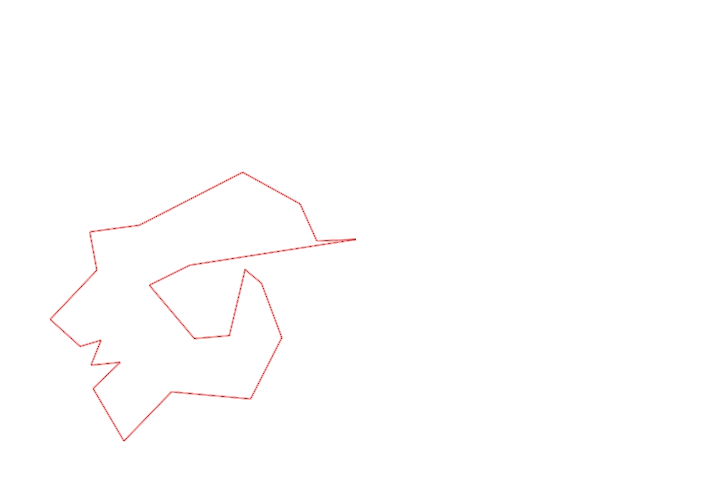
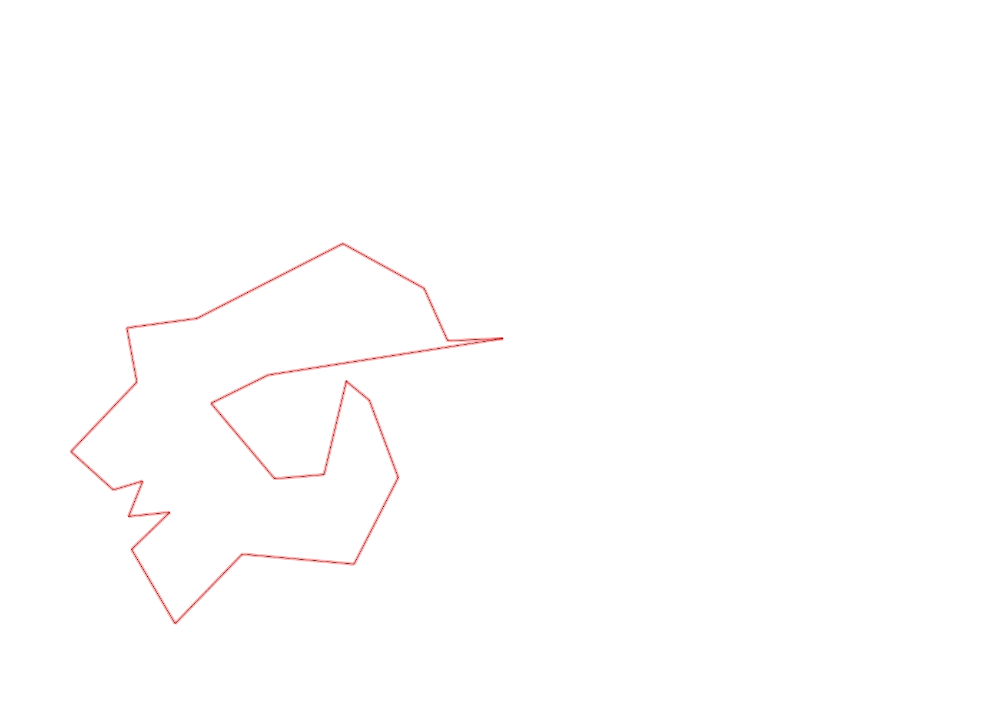

| Control |
Points |
Time Punched |
Distance |
Your Time |
Pace |
Place |
Fastest Time |
Median Time |
% Behind Fastest |
| 127 |
20 |
|
0.06 |
0:00:39 |
10:50 |
19 / 30 |
0:00:01 |
0:00:32 |
3800% |
| 42 |
40 |
|
0.17 |
0:01:41 |
09:54 |
5 / 20 |
0:01:06 |
0:01:52 |
53% |
| 61 |
60 |
|
0.21 |
0:03:29 |
16:35 |
9 / 20 |
0:02:20 |
0:03:34 |
49% |
| 59 |
50 |
|
0.24 |
0:02:30 |
10:25 |
10 / 19 |
0:01:47 |
0:02:30 |
40% |
| 77 |
70 |
|
0.21 |
0:02:32 |
12:03 |
8 / 17 |
0:01:25 |
0:02:33 |
78% |
| 40 |
40 |
|
0.18 |
0:02:47 |
15:27 |
13 / 18 |
0:01:16 |
0:02:38 |
119% |
| 41 |
40 |
|
0.11 |
0:00:41 |
06:12 |
5 / 20 |
0:00:28 |
0:01:07 |
46% |
| 71 |
70 |
|
0.09 |
0:00:46 |
08:31 |
2 / 12 |
0:00:33 |
0:01:12 |
39% |
| 54 |
50 |
|
0.08 |
0:00:56 |
11:40 |
25 / 33 |
0:00:27 |
0:00:45 |
107% |
| 69 |
60 |
|
0.07 |
0:01:35 |
22:37 |
7 / 20 |
0:01:00 |
0:01:56 |
58% |
| 53 |
50 |
|
0.12 |
0:01:46 |
14:43 |
10 / 26 |
0:01:16 |
0:01:51 |
39% |
| 44 |
40 |
|
0.2 |
0:02:06 |
10:30 |
17 / 22 |
0:00:39 |
0:01:40 |
223% |
| 32 |
30 |
|
0.12 |
0:01:17 |
10:41 |
10 / 22 |
0:00:43 |
0:01:19 |
79% |
| 63 |
60 |
|
0.15 |
0:01:41 |
11:13 |
16 / 25 |
0:01:05 |
0:01:29 |
55% |
| 107 |
100 |
|
0.35 |
0:03:46 |
10:45 |
11 / 22 |
0:02:14 |
0:03:49 |
68% |
| 57 |
50 |
|
0.2 |
0:04:15 |
21:15 |
13 / 22 |
0:01:54 |
0:03:53 |
123% |
| 92 |
90 |
|
0.12 |
0:03:30 |
29:10 |
6 / 18 |
0:02:10 |
0:04:22 |
61% |
| 47 |
40 |
|
0.12 |
0:07:10 |
59:43 |
13 / 16 |
0:01:07 |
0:04:40 |
541% |
| 126 |
20 |
|
0.5 |
0:04:50 |
09:40 |
1 / 1 |
0:04:50 |
0:04:50 |
0% |
| 130 |
30 |
|
0.14 |
0:01:39 |
11:47 |
19 / 19 |
0:00:00 |
0:00:33 |
-% |
| 60 |
60 |
|
0.21 |
0:01:42 |
08:05 |
2 / 5 |
0:00:00 |
0:01:57 |
-% |
| 38 |
30 |
|
0.11 |
0:01:13 |
11:03 |
7 / 15 |
0:00:00 |
0:01:15 |
-% |
| Finish |
0 |
|
0.2 |
-1 day, 23:07:29 |
115:37:25 |
1 / 10 |
-1 day, 23:07:29 |
0:01:37 |
0% |
Total Distance Covered: 3.96km
Points Scored: 1100
Late Penalty: 0
Final Score: 0
Total Time: 0hours 0minutes 0seconds
Efficiency: 0.0 points/km
 
